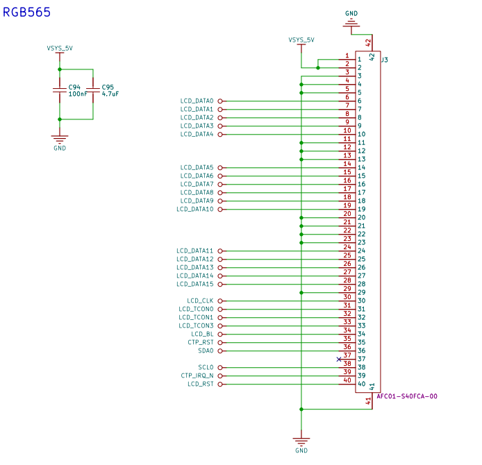

WAV Audio Player Example Guide
English | 中文
Introduction
This example demonstrates how to play WAV format audio files on the Titan Board Mini using the ES8156 Audio Codec via the SSI (Synchronous Serial Interface), combined with the RT-Thread Audio Framework for complete audio playback functionality. This project supports 16 sample-rate options, mono/stereo channels, and 16-bit PCM WAV files.
Main features include:
High-quality audio playback using ES8156 codec
WAV format audio file playback support (16 sample-rate options, 16-bit PCM, mono/stereo)
I2S audio data transmission via SSI interface
Volume control, pause/resume/stop playback control
Audio file reading from SD card or Flash file system
Hardware Introduction
1. ES8156 Audio Codec
The Titan Board Mini features the ES8156 high-performance audio codec:
Parameter |
Description |
|---|---|
Model |
ES8156 |
Manufacturer |
Everest Semiconductor |
Type |
Stereo DAC (Digital-to-Analog Converter) |
Resolution |
24-bit |
Sample Rate |
8kHz - 192kHz |
SNR |
> 100dB |
Output Power |
30mW + 30mW @ 16Ohm |
Interface |
I2S / PCM |
Control Interface |
I2C |
Operating Voltage |
1.8V - 3.6V |
2. ES8156 Key Features
Audio Performance
High-fidelity audio: 24-bit DAC, supporting high-resolution audio
Wide sample rate range: 8kHz - 192kHz, covering various audio scenarios
Low noise: > 100dB SNR for clear audio quality
Low distortion: THD+N < -85dB
Multi-format support: I2S, Left-justified, Right-justified, PCM
Output Characteristics
Stereo output: Left and right channels independent output
Headphone driver: Built-in headphone amplifier, direct drive for 16Ohm - 32Ohm headphones
Line output: Line-level output support
Volume control: Digital volume control, range 0-255, +/-0.5dB/Step
3. SSI (Synchronous Serial Interface)
The SSI interface on RA8P1 is used for audio data transmission:
I2S protocol: Standard I2S audio protocol
Master/Slave mode: Configurable as master or slave
DMA support: DMA transfer support, reducing CPU usage
Multi-channel: Support for mono/stereo
Software Architecture
1. Layered Design
The audio playback system uses a layered architecture:
Application Layer (User Code)
↓
WAV Player Package - WAV Player
↓
Audio Device Framework - RT-Thread Audio Device Framework
↓
ES8156 Driver - ES8156 Driver
↓
SSI/I2S Driver - SSI/I2S Driver
↓
FSP SSI HAL - Hardware Abstraction Layer
2. Core Components
WAV Player Package
RT-Thread’s WAV player package provides complete audio playback functionality:
WAV file parsing: Parse WAV file header, extract audio parameters
Playback control: Play, pause, resume, stop
Volume control: 0-99 level volume adjustment
State management: Playback state machine management
Multi-file support: Support playback from different storage media
Main interfaces (wavplayer.h):
/* Play WAV file */
int wavplayer_play(char *uri);
/* Stop playback */
int wavplayer_stop(void);
/* Pause playback */
int wavplayer_pause(void);
/* Resume playback */
int wavplayer_resume(void);
/* Set volume (0-99) */
int wavplayer_volume_set(int volume);
/* Get volume */
int wavplayer_volume_get(void);
/* Get playback state */
int wavplayer_state_get(void);
ES8156 Driver
The ES8156 driver provides codec control interfaces:
/* Initialize ES8156 */
rt_err_t es8156_device_init(void);
/* Get device handle */
struct es8156_device *es8156_get_device(void);
/* Set volume (0-255) */
void es8156_set_volume(rt_uint8_t volume);
/* Mute/Unmute */
void es8156_mute(rt_bool_t mute);
/* Power down */
void es8156_powerdown(void);
Driver configuration:
I2C interface: I2C1 (for register configuration)
I2C address: 0x08 (ADDR pin connected to GND)
Analog voltage: 3.3V (configurable 1.8V/3.3V)
Default volume: 191 (0dB)
3. Project Structure
Titan_Mini_wavplayer/
├── src/
│ └── hal_entry.c # Main program entry
├── libraries/
│ └── HAL_Drivers/ports/
│ └── es8156/
│ ├── es8156.c # ES8156 driver implementation
│ └── es8156.h # ES8156 driver header
└── packages/
└── wavplayer-latest/ # WAV player package
├── inc/
│ ├── wavplayer.h # Player interface
│ ├── wavrecorder.h # Recorder interface
│ └── wavhdr.h # WAV file header definitions
└── src/
├── wavplayer.c # Player implementation
├── wavplayer_cmd.c # Player commands
├── wavhdr.c # WAV file parsing
└── wavrecorder.c # Recorder implementation
Usage
1. Initialization Flow
The system needs to initialize ES8156 and audio device during startup:
#include <rtthread.h>
#include "es8156.h"
void hal_entry(void)
{
/* Initialize ES8156 codec */
if (es8156_device_init() != RT_EOK)
{
rt_kprintf("ES8156 initialization failed!\n");
return;
}
rt_kprintf("ES8156 audio codec initialized successfully!\n");
rt_kprintf("WAV Player is ready!\n");
/* Main loop */
while (1)
{
/* Application logic */
rt_thread_mdelay(1000);
}
}
2. Playing WAV Files
Use msh command line to play audio files:
/* Play WAV file from SD card */
msh >wavplay -s /sdcard/test.wav
3. WAV File Format Requirements
WAV files must meet the following requirements:
Format: Standard WAV (RIFF) format
Encoding: PCM encoding
Sample rate: One of the 16 supported sample-rate options
Bit depth: 16-bit
Channels: Mono or stereo
File extension: .wav
Configuration
1. Kconfig Configuration
Configure audio options in libraries/M85_Config/Kconfig:
menuconfig BSP_USING_AUDIO
bool "Enable Audio"
select BSP_USING_SSI0
select BSP_USING_ES8156
default n
if BSP_USING_AUDIO
config BSP_USING_AUDIO_VOLUME
int "Default volume (0-99)"
default 50
endif
2. RT-Thread Settings
In RT-Thread Studio, enable the following components:
Device drivers
Enable SSI/I2C device drivers
Enable Audio device
Packages
Add wavplayer-latest package
Components
Enable DFS file system
Enable SD card file system
3. Hardware Connections
ES8156 connections to Titan Board Mini:
I2C control interface:
I2C1_SDA / I2C1_SCL
Used for ES8156 register configuration
I2S audio interface:
SSI_TX (audio data output)
SSI_BCK (bit clock)
SSI_LRCK (left/right channel clock)
SSI_MCK (master clock, optional)
Run Effect
Convert the audio file to PCM, 16-bit, mono/stereo WAV format with one of the 16 supported sample-rate options, save it to the SD card, insert the SD card into the development board. After powering on, the system will automatically mount the SD card. Then enter the command wavplay -s <filename> to play.
